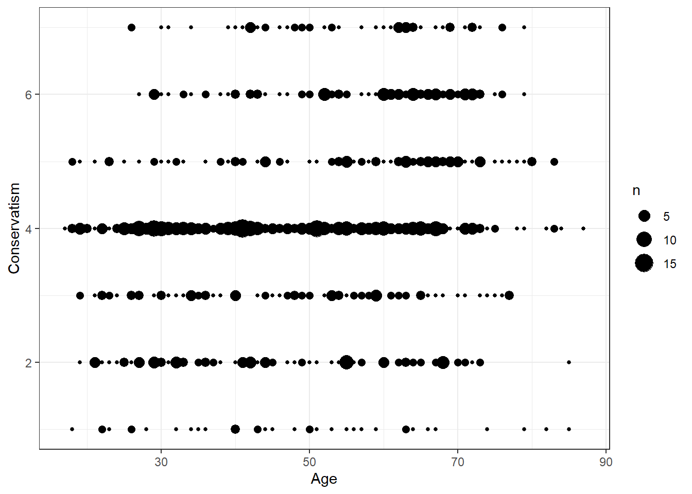
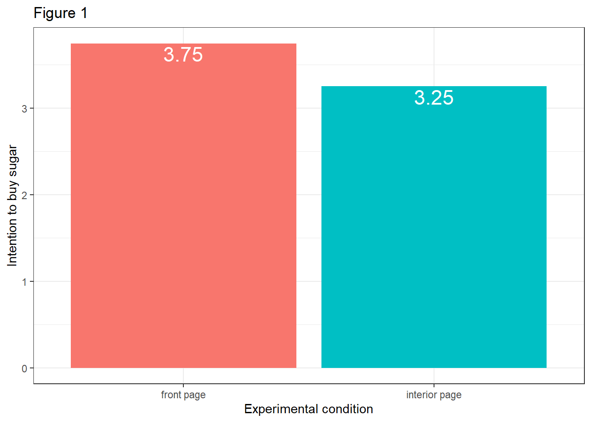
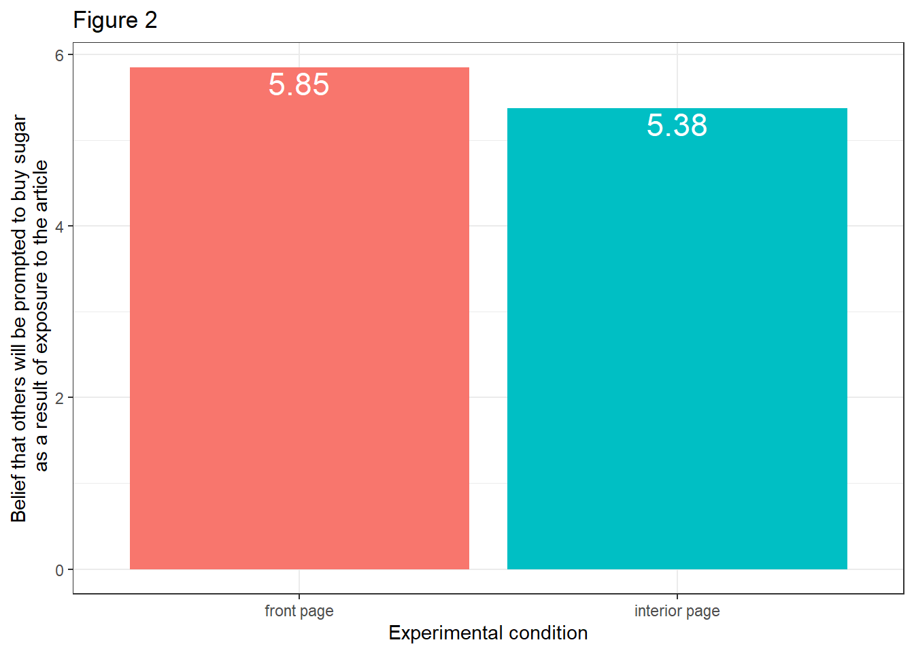
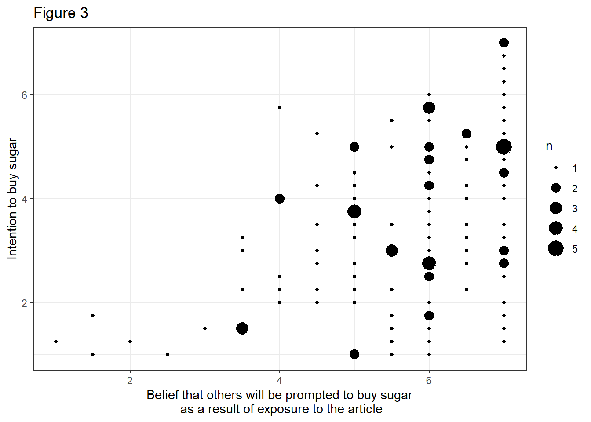
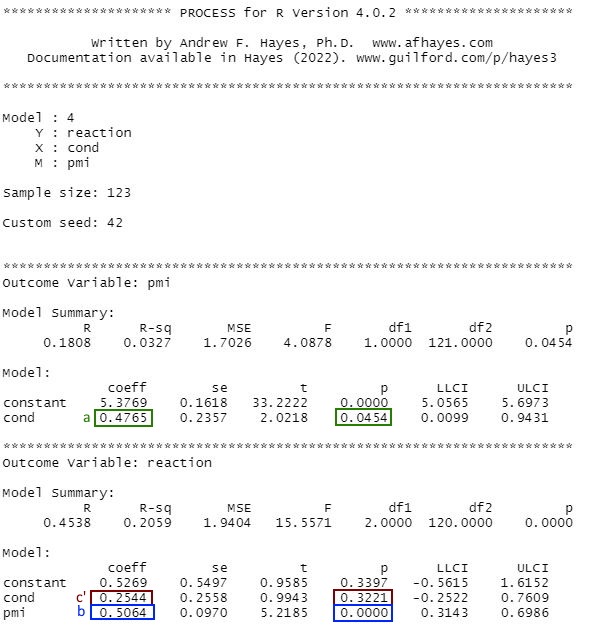
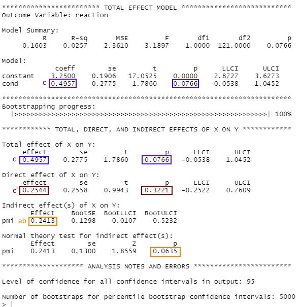
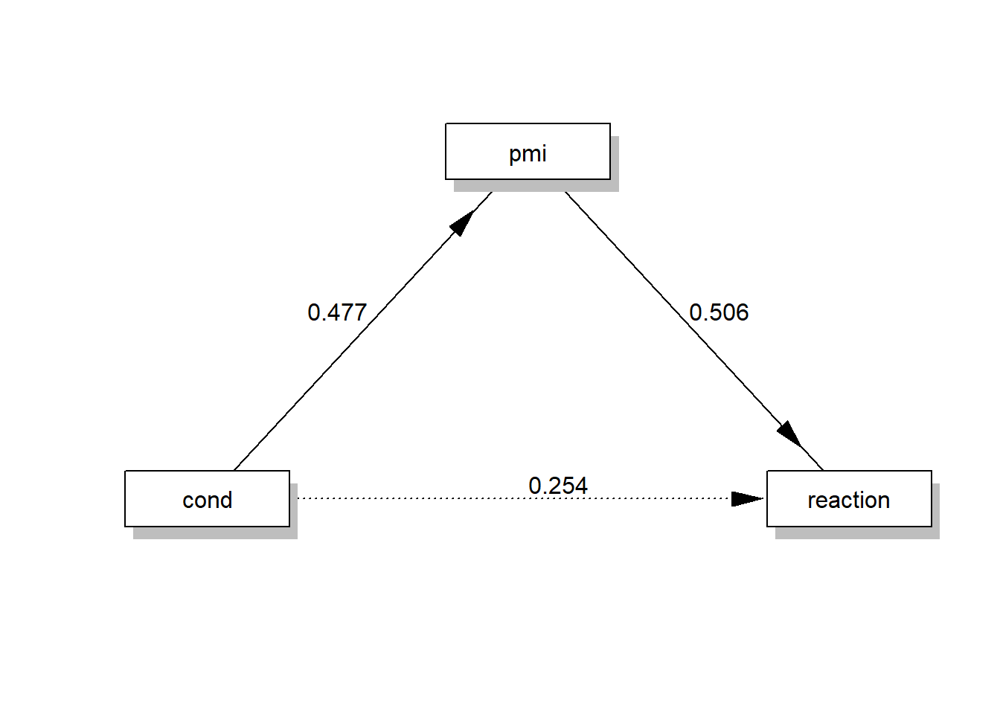
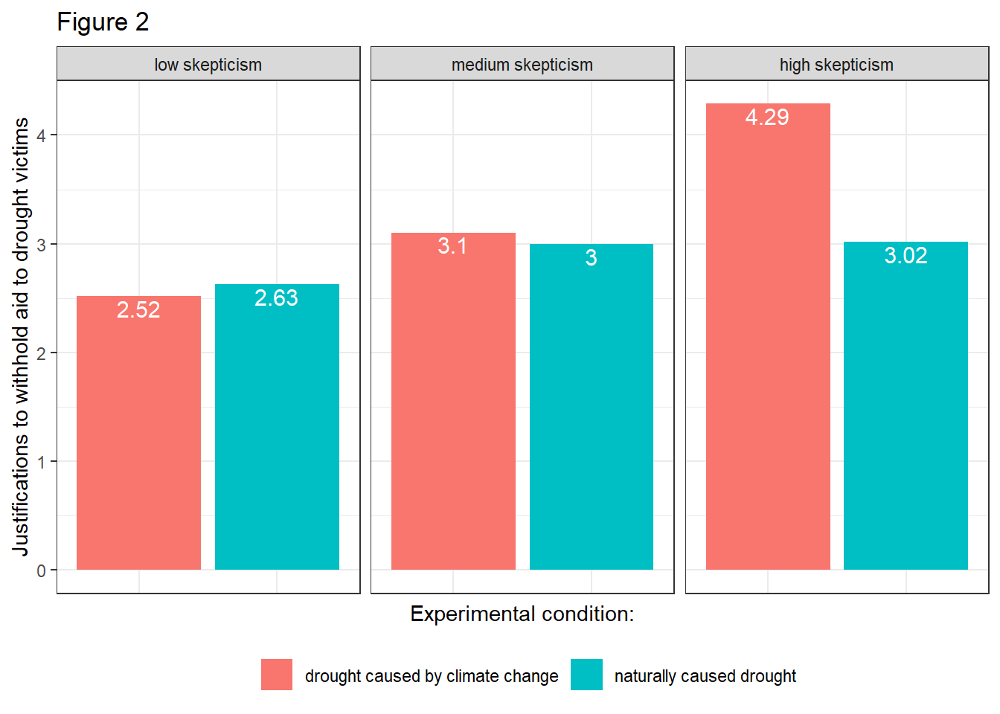
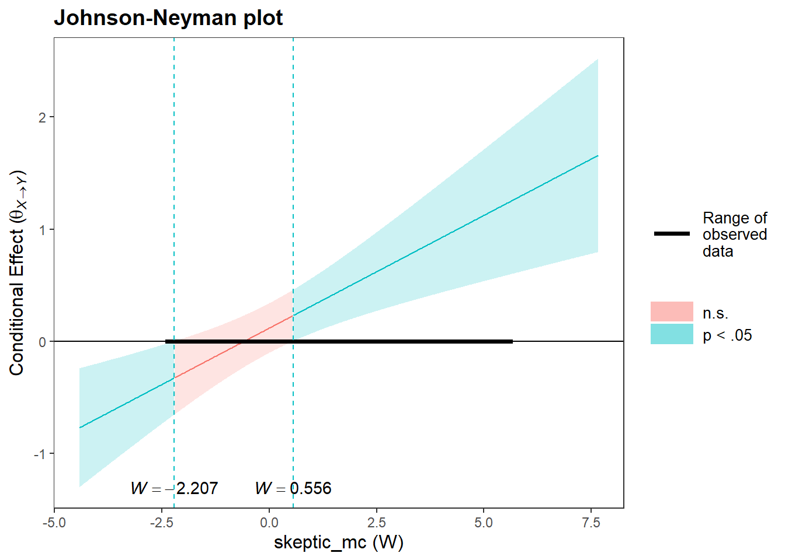
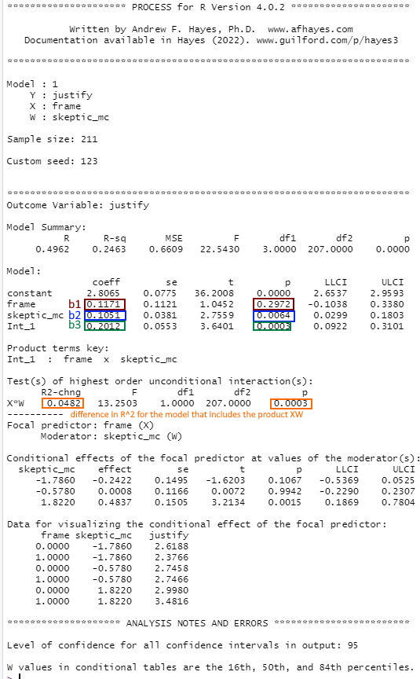

Solutions
This is where you’ll find solutions for all of the tutorials.
Solutions for Exercise 1
Task 1
Below you will see multiple choice questions. Please try to identify the correct answers. 1, 2, 3 and 4 correct answers are possible for each question.
1. What panels are part of RStudio?
Solution:
- source (x)
- console (x)
- packages, files & plots (x)
2. How do you activate R packages after you have installed them?
Solution:
- library() (x)
3. How do you create a vector in R with elements 1, 2, 3?
Solution:
- c(1,2,3) (x)
4. Imagine you have a vector called ‘vector’ with 10 numeric elements. How do you retrieve the 8th element?
Solution:
- vector[8] (x)
5. Imagine you have a vector called ‘hair’ with 5 elements: brown, black, red, blond, other. How do you retrieve the color ‘blond’?
Solution:
- hair[4] (x)
Task 2
Create a numeric vector with 8 values and assign the name age to the vector. First, display all elements of the vector. Then print only the 5th element. After that, display all elements except the 5th. Finally, display the elements at the positions 6 to 8.
Solution:
age <- c(65,52,73,71,80,62,68,87)
age## [1] 65 52 73 71 80 62 68 87age[5]## [1] 80age[-5]## [1] 65 52 73 71 62 68 87age[6:8]## [1] 62 68 87Task 3
Create a non-numeric, i.e. character, vector with 4 elements and assign the name eye_color to the vector. First, print all elements of this vector to the console. Then have only the value in the 2nd element displayed, then all values except the 2nd element. At the end, display the elements at the positions 2 to 4.
Solution:
eye_color <- c("blue", "green", "brown", "other")
eye_color## [1] "blue" "green" "brown" "other"eye_color[2]## [1] "green"eye_color[-2]## [1] "blue" "brown" "other"eye_color[2:4]## [1] "green" "brown" "other"Task 4
Create a data frame called data. The data frame should contain the following variables (in this order):
- a vector called food. It should contain 5 elements, namely the names of your five favorite dishes.
- a vector called description. For every dish mentioned in food, please describe the dish in a single sentence (for instance, if the first food you describe is “pizza”, you could write: “This is an Italian dish, which I prefer with a lot of cheese.”)
- a vector called rating. Rate every dish mentioned in food with 1-5 (using every number only once), i.e., by rating your absolute favorite dish out of all five with a 1 and your least favorite dish out of all five with a 5.
Solution:
data <- data.frame("food" = c("pizza", "pasta", "ice cream", "crisps", "passion fruit"),
"description" = c("Italian dish, I actually prefer mine with little cheese",
"Another Italian dish",
"The perfect snack in summer",
"Potatoes and oil - a luxurious combination",
"A fruit that makes me think about vacation"),
"Rating" = c(3,1,2,4,5))
data## food description Rating
## 1 pizza Italian dish, I actually prefer mine with little cheese 3
## 2 pasta Another Italian dish 1
## 3 ice cream The perfect snack in summer 2
## 4 crisps Potatoes and oil - a luxurious combination 4
## 5 passion fruit A fruit that makes me think about vacation 5Task 5
Can you sort the data in your data set by rating - with your favorite dish (i.e., the one rated “1”) on top of the list and your least favorite dish (i.e., the one rated “5”) on the bottom?
Important: You do not yet know this command - you’ll have to google for the right solution. Please do and note down the exact search terms you used for googling.
Solution:
library("dplyr")
data <- data %>% arrange(Rating)
data## food description Rating
## 1 pasta Another Italian dish 1
## 2 ice cream The perfect snack in summer 2
## 3 pizza Italian dish, I actually prefer mine with little cheese 3
## 4 crisps Potatoes and oil - a luxurious combination 4
## 5 passion fruit A fruit that makes me think about vacation 5Solutions for Exercise 2
Task 1
Below you will see multiple choice questions. Please try to identify the correct answers. 1, 2, 3 and 4 correct answers are possible for each question.
1. What are the main characteristics of tidy data?
Solution:
- Every observation is a row. (x)
2. What are dplyr functions?
Solution:
mutate()(x)
3. How can you sort the eye_color of Star Wars characters from Z to A?
Solution:
starwars_data %>% arrange(desc(eye_color))(x)starwars_data %>% select(eye_color) %>% arrange(desc(eye_color))(x)
4. Imagine you want to recode the height of the these characters. You want to have three categories from small and medium to tall. What is a valid approach?
Solution:
starwars_data %>% mutate(height = case_when(height<=150~"small",height<=190~"medium",height>190~"tall"))(x)
5. Imagine you want to provide a systematic overview over all hair colors and what species wear these hair colors frequently (not accounting for the skewed sampling of species)? What is a valid approach?
Solution:
starwars_data %>% group_by(hair_color, species) %>% summarize(count = n()) %>% arrange(hair_color)(x)
Task 2
Now it’s you turn. Load the starwars data like this:
library(dplyr) # to activate the dplyr package
starwars_data <- starwars # to assign the pre-installed starwars data set (dplyr) into a source object in our environmentHow many humans are contained in the starwars data overall? (Hint: use summarize(count = n()) or count())?
Solution:
You can use summarize(count = n()):
starwars_data %>%
filter(species == "Human") %>%
summarize(count = n())## # A tibble: 1 x 1
## count
## <int>
## 1 35Alternatively, you can use the count() function:
starwars_data %>%
filter(species == "Human") %>%
count(species)## # A tibble: 1 x 2
## species n
## <chr> <int>
## 1 Human 35Task 3
How many humans are contained in starwars by gender?
Solution:
You can use summarize(count = n()):
starwars_data %>%
filter(species == "Human") %>%
group_by(species, gender) %>%
summarize(count = n())## # A tibble: 2 x 3
## # Groups: species [1]
## species gender count
## <chr> <chr> <int>
## 1 Human feminine 9
## 2 Human masculine 26Alternatively, you can use the count() function:
starwars_data %>%
filter(species == "Human") %>%
count(species, gender)## # A tibble: 2 x 3
## species gender n
## <chr> <chr> <int>
## 1 Human feminine 9
## 2 Human masculine 26Task 4
What is the most common eye_color among Star Wars characters? (Hint: use arrange())__
Solution:
starwars_data %>%
group_by(eye_color) %>%
summarize(count = n()) %>%
arrange(desc(count))## # A tibble: 15 x 2
## eye_color count
## <chr> <int>
## 1 brown 21
## 2 blue 19
## 3 yellow 11
## 4 black 10
## 5 orange 8
## 6 red 5
## 7 hazel 3
## 8 unknown 3
## 9 blue-gray 1
## 10 dark 1
## 11 gold 1
## 12 green, yellow 1
## 13 pink 1
## 14 red, blue 1
## 15 white 1Task 5
What is the average mass of Star Wars characters that are not human and have yellow eyes? (Hint: remove all NAs)__
Solution:
starwars_data %>%
filter(species != "Human" & eye_color=="yellow") %>%
summarize(mean_mass = mean(mass, na.rm=TRUE))## # A tibble: 1 x 1
## mean_mass
## <dbl>
## 1 74.1Task 6
Compare the mean, median, and standard deviation of mass for all humans and droids. (Hint: remove all NAs)__
Solution:
starwars_data %>%
filter(species=="Human" | species=="Droid") %>%
group_by(species) %>%
summarize(M = mean(mass, na.rm = TRUE),
Med = median(mass, na.rm = TRUE),
SD = sd(mass, na.rm = TRUE)
)## # A tibble: 2 x 4
## species M Med SD
## <chr> <dbl> <dbl> <dbl>
## 1 Droid 69.8 53.5 51.0
## 2 Human 82.8 79 19.4Task 7
Create a new variable in which you store the mass in gram. Add it to the data frame.
Solution:
starwars_data <- starwars_data %>%
mutate(gr_mass = mass*1000)
starwars_data %>%
select(name, species, mass, gr_mass)## # A tibble: 87 x 4
## name species mass gr_mass
## <chr> <chr> <dbl> <dbl>
## 1 Luke Skywalker Human 77 77000
## 2 C-3PO Droid 75 75000
## 3 R2-D2 Droid 32 32000
## 4 Darth Vader Human 136 136000
## 5 Leia Organa Human 49 49000
## 6 Owen Lars Human 120 120000
## 7 Beru Whitesun lars Human 75 75000
## 8 R5-D4 Droid 32 32000
## 9 Biggs Darklighter Human 84 84000
## 10 Obi-Wan Kenobi Human 77 77000
## # ... with 77 more rowsSolutions for Exercise 3
Task 1
Try to reproduce this plot with dplyr and ggplot2. (Hint: You can hide the legend by adding theme(legend.position = "none") to your plot.)
Solution:
data %>%
mutate(sex = case_when(
sex == 0 ~ "Female",
sex == 1 ~ "Male")) %>%
mutate(Party = case_when(
partyid == 1 ~ "Democrat",
partyid == 2 ~ "Independent",
partyid == 3 ~ "Republican")) %>%
ggplot(aes(x=Party,y=negemot, fill=Party)) +
stat_summary(geom = "bar", fun = "mean") +
theme_bw() +
theme(legend.position = "none") +
labs(title = "Climate change attitudes of U.S. partisans by gender",
y = "Negative emotions about climate change") +
facet_wrap(~sex, nrow=2)Task 2
Now, try to reproduce this graph. (Hint: You will need to recode the ideology variable in a way that higher values represent stronger attitudes, independent of partisanship.)
Solution:
data <- data %>%
mutate(ideology_ext = case_when(
ideology == 1 ~ 4,
ideology == 2 ~ 3,
ideology == 3 ~ 2,
ideology == 4 ~ 1,
ideology == 5 ~ 2,
ideology == 6 ~ 3,
ideology == 7 ~ 4)) %>%
mutate(sex = case_when(
sex == 0 ~ "Female",
sex == 1 ~ "Male")) %>%
mutate(Party = case_when(
partyid == 1 ~ "Democrat",
partyid == 2 ~ "Independent",
partyid == 3 ~ "Republican"))data %>%
ggplot(aes(x=Party,y=ideology_ext, fill=Party)) +
geom_boxplot() +
theme_bw() +
theme(legend.position = "none") +
labs(title = "Ideological extremity of U.S. partisans by gender",
y = "Ideological extremity") +
facet_wrap(~sex)Task 3
Can you make a chart that breaks down the relationship between age, negative emotions about climate change, and ideological extremity for the different sexes AND parties?
Solution 1:
data %>%
ggplot(aes(x=age,y=negemot, size=ideology_ext, color = Party)) +
geom_point() +
scale_size(range = c(0.3, 3), name = "Ideological extremity") +
theme_bw() +
labs(title = "Relationship between age, climate change attitudes, \n and ideological extremity",
x = "Age", y = "Negative emotions about climate change") +
facet_wrap(~sex, nrow=2)Solution 2:
Alternatively, you might enjoy this look that you can create with facet_grid():
data %>%
ggplot(aes(x=age,y=negemot, size=ideology_ext, color = Party)) +
geom_point() +
scale_size(range = c(0.3, 3), name = "Ideological extremity") +
theme_bw() +
labs(title = "Relationship between age, climate change attitudes, and ideological extremity",
x = "Age", y = "Negative emotions about climate change") +
facet_grid(vars(sex), vars(Party))
Solution 3:
Or even this look, also done with facet_grid():
data %>%
ggplot(aes(x=age,y=negemot, size=ideology_ext, color = Party)) +
geom_point() +
scale_size(range = c(0.3, 3), name = "Ideological extremity") +
theme_bw() +
labs(title = "Relationship between age, climate change attitudes, and ideological extremity",
x = "Age", y = "Negative emotions about climate change") +
facet_grid(~sex + Party)Solutions for Exercise 4
Task 1
Let’s use the data set glbwarm again, which you should know well by now. Install / activate the processR package and assign the glbwarm data to a source object.
# installing/loading the package:
if(!require(processR)) {
install.packages("processR");
require(processR)
} #load / install+load processR
data <- processR::glbwarmIn this task, we want to tackle simple linear regression. More specifically, we want to predict the ideology of our respondents by their age because we assume that older respondents will hold more conservative viewpoints. The higher the values of the ideology variable, the more conservative the respondents are (coded from 1 ‘very liberal’ to 7 ‘very conservative’).
Research question: Do older U.S. Americans hold more conservative viewpoints than younger U.S. Americans?
To answer this question, prepare a visual inspection of this relationship without fitting a regression line. Can you recognize a relationship? What is its nature?
Solution:
data %>% ggplot(aes(x=age, y=ideology)) +
geom_count() +
theme_bw() +
labs(x="Age", y="Conservatism")
Evaluation: We can observe a small, positive relationship between age and conservatism. (This can be inferred from the amount of bigger bubbles clustering on the top right corner of the graph.)
Task 2
Next, try to quantify the association using Pearson’s r. Interpret the result.
Solution:
cor.test(glbwarm$ideology,glbwarm$age, method="pearson")##
## Pearson's product-moment correlation
##
## data: glbwarm$ideology and glbwarm$age
## t = 6.1978, df = 813, p-value = 0.0000000009096
## alternative hypothesis: true correlation is not equal to 0
## 95 percent confidence interval:
## 0.1458602 0.2770376
## sample estimates:
## cor
## 0.2124056Evaluation: There is a small, positive, and highly significant relationship between age and conservatism (r = 0.21, p < 0.001). We can conclude that older U.S. Americans are more conservative.
Task 3
Using your graph from Task 1, fit a regression line to your data points (Hint: You will need to load the ggpubr package). Interpret the parameters of the regression line.
Solution:
# installing/loading the package:
if(!require(ggpubr)) {
install.packages("ggpubr");
require(ggpubr)
} #load / install+load ggpubrdata %>%
ggplot(aes(x=age, y=ideology)) +
geom_count() +
theme_bw() +
# xlim(0,7) +
# ylim(0,7.5) +
labs(x="Age", y="Conservatism") +
geom_smooth(method='lm', formula= y~x, color = "darkred") +
stat_cor(aes(label = ..rr.label..)) +
stat_regline_equation(label.y = 6.2)Evaluation: The equation is Y = 3.1 + 0.02*X. This means that a person who becomes one year older is estimated to become 0.02 points more conservative. Similarly, two U.S. Americans with an age difference of 10 years are estimated to differ by 0.2 points on the ideology scale. However, age is not a really good predictor of conservatism as the predictor only explains about 4.5% of the observed variance in conservatism scores (R2).
Task 4
Run a linear model in R using the ideology and age variables. Interpret the results.
Solution:
summary(lm(ideology ~ age,data=data))##
## Call:
## lm(formula = ideology ~ age, data = data)
##
## Residuals:
## Min 1Q Median 3Q Max
## -3.7807 -0.8187 0.0647 0.8091 3.3793
##
## Coefficients:
## Estimate Std. Error t value Pr(>|t|)
## (Intercept) 3.109423 0.165465 18.792 < 0.0000000000000002 ***
## age 0.019663 0.003173 6.198 0.00000000091 ***
## ---
## Signif. codes: 0 '***' 0.001 '**' 0.01 '*' 0.05 '.' 0.1 ' ' 1
##
## Residual standard error: 1.478 on 813 degrees of freedom
## Multiple R-squared: 0.04512, Adjusted R-squared: 0.04394
## F-statistic: 38.41 on 1 and 813 DF, p-value: 0.0000000009096Evaluation: Again, we can extract the parameters for the intercept (b[0] = 3.1), the regression coefficient (b[1] = 0.019, p < 0.001), and R2 = 0.045. There is a significant, positive relationship between age and conservatism, but the effect is very small (size of b[1]).
Task 5
Since age alone does not seem to be a good predictor of conservatism, we want to introduce other predictors into the model and run a Multiple Linear Regression. This means that we will predict the effect of age on conservatism while controlling for the effect of third variables. For example, the respondents’ gender (sex, 0 = female, 1 = male) and their party preference (partyid, 1 = Democrat, 2 = Independent, 3 = Republican) might be great predictors of conservatism.
Note: In a linear regression model, we can only include metric variables and variables that are binary coded (0/1). However, partyid is a categorical, i.e. factor variable, since Democrats are coded 1, Independents 2, and Republicans 3. Therefore, you need to mutate partyid and create two new binary variables democrat (0/1) and republican (0/1), where 1 indicates that the respondent identifies with that political party. (You don’t need to create a variable independent, since that information would be redundant: someone who has a value of 0 for both republican AND democrat MUST be an independent, so you can derive party preference with just two variables).
Then, run a multiple linear model that predicts ideology by sex, democrat, republican, and age. Interpret the results and the meaning of the age coefficient.
Solution:
data <- data %>%
mutate(democrat = case_when(
partyid == 1 ~ 1,
partyid == 2 ~ 0,
partyid == 3 ~ 0)) %>%
mutate(republican = case_when(
partyid == 1 ~ 0,
partyid == 2 ~ 0,
partyid == 3 ~ 1)
)
summary(lm(ideology ~ sex + republican + democrat + age,data=data))##
## Call:
## lm(formula = ideology ~ sex + republican + democrat + age, data = data)
##
## Residuals:
## Min 1Q Median 3Q Max
## -4.0975 -0.9313 0.0256 0.7641 3.9739
##
## Coefficients:
## Estimate Std. Error t value Pr(>|t|)
## (Intercept) 3.504712 0.146041 23.998 < 0.0000000000000002 ***
## sex 0.158677 0.083620 1.898 0.058105 .
## republican 1.251718 0.113609 11.018 < 0.0000000000000002 ***
## democrat -0.848157 0.105368 -8.049 0.00000000000000296 ***
## age 0.009475 0.002610 3.630 0.000301 ***
## ---
## Signif. codes: 0 '***' 0.001 '**' 0.01 '*' 0.05 '.' 0.1 ' ' 1
##
## Residual standard error: 1.171 on 810 degrees of freedom
## Multiple R-squared: 0.4031, Adjusted R-squared: 0.4002
## F-statistic: 136.8 on 4 and 810 DF, p-value: < 0.00000000000000022Evaluation: Compared to our simple model, the R2 has increased dramatically, from 0.045 to 0.403! We can now explain 40.3% of the variance in conservatism with the newly introduced covariates. While gender is not a significant predictor of conservatism (b[1] = 0.158, p = 0.058), i.e., there is no significant difference in conservatism between men and women, party preference plays a large role in explaining conservative viewpoints. Republicans are more conservative (b[2] = 1.251, p < 0.001) than Independents (reference category, not included as a separate variable), while Democrats are less conservative than Independents (b[3] = -0.848, p < 0.001). The size of the effect that age has on conservatism has decreased further now that we control for sex and party preference (b[4] = 0.009, p < 0.001). This implies that some of the effects of age are now transported through sex and, more likely, party preference. We can conclude that two U.S. citizens who differ by 10 years but have the same gender and party preference are estimated to differ by 0.09 points on the conservatism scale. That’s a really small effect, but it’s still significant.
Task 6
Standardize all relevant variables and run the model again (note that binary variables shouldn’t be standardized). How does the interpretation of the age coefficient change?
Solution:
data$ideology_st <- scale(data$ideology)
data$age_st <- scale(data$age)
summary(lm(ideology_st ~ sex + republican + democrat + age_st,data=data))##
## Call:
## lm(formula = ideology_st ~ sex + republican + democrat + age_st,
## data = data)
##
## Residuals:
## Min 1Q Median 3Q Max
## -2.71045 -0.61607 0.01696 0.50543 2.62866
##
## Coefficients:
## Estimate Std. Error t value Pr(>|t|)
## (Intercept) -0.07233 0.06386 -1.133 0.257702
## sex 0.10496 0.05531 1.898 0.058105 .
## republican 0.82799 0.07515 11.018 < 0.0000000000000002 ***
## democrat -0.56104 0.06970 -8.049 0.00000000000000296 ***
## age_st 0.10236 0.02819 3.630 0.000301 ***
## ---
## Signif. codes: 0 '***' 0.001 '**' 0.01 '*' 0.05 '.' 0.1 ' ' 1
##
## Residual standard error: 0.7745 on 810 degrees of freedom
## Multiple R-squared: 0.4031, Adjusted R-squared: 0.4002
## F-statistic: 136.8 on 4 and 810 DF, p-value: < 0.00000000000000022Evaluation: The age coefficient is now expressed in standard deviations from the mean: Two U.S. Americans with one standard deviation difference in their age are expected to rank b[4] = 0.102 (p < 0.001) standard deviations higher on the conservatism scale, when controlling for the influence of sex and party preference. If we had a second standardized coefficient in the model, then we could compare their effect sizes directly.
Solutions for Exercise 5
In this Exercise, we will work with the pmi data set. It’s a data set of a communication science experiment that was conducted by Tal-Or, Cohen, Tsfati, & Gunther in 2010 and comes pre-installed with processR. The data set contains 123 observations of 6 variables. There are three variables of interest to us in this data set:
cond: article about sugar shortage was placed at the front (1) or interior (0) page of a newspaper
pmi: belief that others will be prompted to buy sugar as a result of exposure to the article (scale: 1-7)
reaction: intention to buy sugar (scale: 1-7)
Let’s load processR and save the pmi data to a source object called data:
# installing/loading the package:
if(!require(processR)) {
install.packages("processR");
require(processR)
} #load / install+load processR
data <- processR::pmiThe theory of presumed media influence suggests that people perceive some effect of a message on others and then react to that perception. Based on this theory, we assume that when the sugar article appears on the front page, the reader will be more likely to believe that others will be prompted to buy sugar. Therefore, the reader will act on this belief and show greater intention to buy sugar themselves (to avoid a personal shortage because others are buying sugar).
Research Question: Is the effect of article placement (front/interior) on the intention to buy sugar mediated by the belief that others will be prompted to buy sugar as a result of exposure to the article? That is, do participants who take part in the front-page experimental condition develop a greater belief that others will be prompted to buy sugar, while this belief increases their own intention to buy sugar?
Task 1
What variables are X, Y, and M in this scenario? Write it down.
X = cond; article about sugar shortage was placed at the front (1) or interior (0) page of a newspaper
Y = reaction; intention to buy sugar (scale: 1-7)
M = pmi; belief that others will be prompted to buy sugar as a result of exposure to the article (scale: 1-7)
Task 2
Create three plots:
The effect c of X on Y without controlling for M.
The direct effect a of X on M.
The effect of M on Y without controlling for X.
Evaluate the plots. What do they tell you?
- The effect c of X on Y without controlling for M:
data %>%
mutate(cond = case_when(
cond == 0 ~ "interior page",
cond == 1 ~ "front page")) %>%
ggplot(aes(x=cond, y=reaction)) +
stat_summary(aes(fill = cond), fun=mean, geom="bar") +
stat_summary(aes(label=round(..y..,2)), fun=mean, geom="text", size=6,
vjust = 1.2, color = "white") +
theme_bw() +
theme(legend.position = "none") +
labs(x="Experimental condition", y="Intention to buy sugar", title="Figure 1")
- The direct effect a of X on M:
data %>%
mutate(cond = case_when(
cond == 0 ~ "interior page",
cond == 1 ~ "front page")) %>%
ggplot(aes(x=cond, y=pmi)) +
stat_summary(aes(fill = cond), fun=mean, geom="bar") +
stat_summary(aes(label=round(..y..,2)), fun=mean, geom="text", size=6,
vjust = 1.2, color = "white") +
theme_bw() +
theme(legend.position = "none") +
labs(x="Experimental condition", y="Belief that others will be prompted to buy sugar\n as a result of exposure to the article", title="Figure 2")
- The effect of M on Y without controlling for X:
data %>%
ggplot(aes(x=pmi, y=reaction)) +
geom_count() +
theme_bw() +
labs(x="Belief that others will be prompted to buy sugar\n as a result of exposure to the article", y="Intention to buy sugar", title="Figure 3")
Evaluation: Visually, there seems to be an effect at play in all three plots. The intention to buy sugar is higher in the front page condition (Figure 1). Moreover, the belief that others will be prompted to buy sugar as a result of exposure to the article is higher in the front page experimental condition (Figure 2). And we can assume that participants who hold stronger beliefs that others will be prompted to buy sugar will act on this belief and show greater intention to buy sugar themselves (Figure 3).
Task 3
Fit two linear regression models that…
quantify the direct effect a of X on M.
quantify the direct effect c’ of X on Y while controlling for M AND the direct effect b of M on Y while controlling for X.
Evaluate both models. What are the regression equations of these models? And how do you interpret their regression coefficients?
- Quantify the direct effect a of X on M:
summary(lm(pmi ~ cond, data=data))##
## Call:
## lm(formula = pmi ~ cond, data = data)
##
## Residuals:
## Min 1Q Median 3Q Max
## -4.8534 -0.8534 0.1466 1.1231 1.6231
##
## Coefficients:
## Estimate Std. Error t value Pr(>|t|)
## (Intercept) 5.3769 0.1618 33.222 <0.0000000000000002 ***
## cond 0.4765 0.2357 2.022 0.0454 *
## ---
## Signif. codes: 0 '***' 0.001 '**' 0.01 '*' 0.05 '.' 0.1 ' ' 1
##
## Residual standard error: 1.305 on 121 degrees of freedom
## Multiple R-squared: 0.03268, Adjusted R-squared: 0.02468
## F-statistic: 4.088 on 1 and 121 DF, p-value: 0.0454Evaluation: The regression equation is M = i[M] + a * X, where i[M] = 5.376 and a = 0.476, i.e. M = 5.376 + 0.476 * X.
Interpretation of i[M] = 5.376: This is the intercept.
Interpretation of a = 0.476: Two participants who differ by one unit on X are expected to differ by a = 0.476 units on M. Since a is positive, we can conclude that participants who are part of the front page condition (X = 1) will have a 0.477 units higher belief that others will be prompted to buy sugar as a result of exposure to the article than those assigned to the interior page condition (X = 0).
- Quantify the direct effect c’ of X on Y while controlling for M AND the direct effect b of M on Y while controlling for X
summary(lm(reaction ~ cond + pmi, data=data))##
## Call:
## lm(formula = reaction ~ cond + pmi, data = data)
##
## Residuals:
## Min 1Q Median 3Q Max
## -3.07636 -1.06128 -0.06346 0.94573 2.94299
##
## Coefficients:
## Estimate Std. Error t value Pr(>|t|)
## (Intercept) 0.52687 0.54968 0.958 0.340
## cond 0.25435 0.25582 0.994 0.322
## pmi 0.50645 0.09705 5.219 0.000000766 ***
## ---
## Signif. codes: 0 '***' 0.001 '**' 0.01 '*' 0.05 '.' 0.1 ' ' 1
##
## Residual standard error: 1.393 on 120 degrees of freedom
## Multiple R-squared: 0.2059, Adjusted R-squared: 0.1927
## F-statistic: 15.56 on 2 and 120 DF, p-value: 0.000000983Evaluation: The regression equation is Y = i[Y] + c′ * X + b * M, where i[Y] = 0.526, c′ = 0.254, and b = 0.506, i.e. Y = 0.526 + 0.254 * X + 0.506 * M.
Interpretation of i[Y] = 0.526: This is the intercept.
Interpretation of c′ = 0.254: The effect c′ is not significant, so we should not interpret it. For the sake of practice, this time, we should do it anyway. Two participants who differ by one unit on X but are equal on M are estimated to differ by 0.254 units on Y. This means that participants who share equal beliefs that others will be prompted to buy sugar as a result of exposure to the article, but one is part of the front page condition (X = 1) and the other is part of the interior page condition (X = 0), are estimated to differ by 0.254 units on average in their intentions to buy sugar. Since c′ is positive, participants assigned to the front page condition (X = 1) are estimated to be 0.254 units higher than those who are part of interior page condition.
Interpretation of b = 0.506: Two participants who were assigned to the same experimental condition (i.e., equal on X) but who differ by one unit in their belief that others will be prompted to buy sugar as a result of exposure to the article (M) are estimated to differ by 0.506 units in intention to buy sugar. Because b is positive, participants with a higher level of presumed media influence are expected to have higher sugar purchasing intentions.
Task 4
Calculate and interpret the indirect effect ab.
print(ab <- 0.476*0.506)## [1] 0.240856Evaluation: As a result of the effect of article placement on the belief that others would be encouraged to purchase sugar, which in turn influenced participants’ own purchase intentions, participants who read an article on the front page of the newspaper were 0.241 units more likely to purchase sugar than those who read it on the interior page.
Task 5
Calculate and interpret the total effect c.
summary(lm(reaction ~ cond, data=data))##
## Call:
## lm(formula = reaction ~ cond, data = data)
##
## Residuals:
## Min 1Q Median 3Q Max
## -2.4957 -1.0000 -0.2457 1.2543 3.5000
##
## Coefficients:
## Estimate Std. Error t value Pr(>|t|)
## (Intercept) 3.2500 0.1906 17.052 <0.0000000000000002 ***
## cond 0.4957 0.2775 1.786 0.0766 .
## ---
## Signif. codes: 0 '***' 0.001 '**' 0.01 '*' 0.05 '.' 0.1 ' ' 1
##
## Residual standard error: 1.537 on 121 degrees of freedom
## Multiple R-squared: 0.02568, Adjusted R-squared: 0.01763
## F-statistic: 3.19 on 1 and 121 DF, p-value: 0.07661The total effect is c = c′ + ab = 0.254 + 0.241 = 0.495, which is the regression coefficient of cond in the above equation.
Evaluation: Participants who read the article on the front page had, on average, 0.495 units greater intention to buy sugar than those who read the article on the interior page of the newspaper.
Task 6
Now run the same analysis, but use processR (i.e., the process function). Only look at the process output and write down the coefficients a, b, c’, ab, and c.
process(data=data, y="reaction", x="cond", m="pmi",
total=1, # calculate the total effect
normal=1, # calculate p-values with standard normal distribution
model=4, # run a simple mediation
seed=42 # insert a number of your liking
) 
Task 7
Finally, create a diagram that displays the results of your analysis.
library(lavaan)
labels <- list(X="cond",M="pmi",Y="reaction")
model <- tripleEquation(X="cond",M="pmi",Y="reaction")
semfit <- sem(model=model,data=data)
statisticalDiagram(4,labels=labels,fit=semfit,whatLabel="est")
Solutions for Exercise 6
In this Exercise, we will work with the disaster data set. It’s a data set of a communication science experiment that was conducted by Chapman and Lickel in 2016 and comes pre-installed with processR. The data set contains 211 observations of 5 variables and investigates how framing of climate change disasters affects justifications for giving or withholding aid to disaster victims. There are three variables of interest to us in this data set:
frame: article was framed as a naturally caused disaster (0) or article was framed as a climate change caused disaster (1)
skeptic: climate change skepticism, higher scores indicate greater skepticism about the reality of climate change (scale: 1-9)
justify: strength of a participant’s justifications for withholding aid, higher scores indicate a stronger sense that helping out the victims is not justified (scale: 1-7)
Let’s load processR and save the disaster data to a source object called data:
# installing/loading the package:
if(!require(processR)) {
install.packages("processR");
require(processR)
} #load / install+load processR
data <- processR::disasterFraming theory suggests that the way a topic is presented to the audience (referred to as “frame”) affects how individuals interpret that information and thus evaluate the topic.
Research Question: Does framing a disaster as caused by climate change, rather than leaving the cause undetermined, affect people’s justification for not helping, and does this framing effect depend on people’s skepticism about climate change?
Task 1
What variables are X, Y, and W in this scenario? Write it down.
X = frame:; article was framed as a naturally caused disaster (0) or article was framed as a climate change caused disaster (0)
Y = justify; strength of a participant’s justifications for withholding aid to drought victims, higher scores indicate a stronger sense that helping out the victims is not justified (scale: 1-7)
W = skeptic; climate change skepticism, higher scores indicate greater skepticism about the reality of climate change (scale: 1-9)
Task 2
Investigate the relationship between X and Y with a plot. Next, make a visual check if this effect depends on different levels of W. Finally, evaluate the figures.
There are many options to visualize the effects and a lot of these approaches are covered in [Moderation Analysis]. Here, we’ll use bar charts.
- The effect of X on Y:
data %>%
mutate(frame = case_when(
frame == 0 ~ "naturally caused drought",
frame == 1 ~ "drought caused by climate change")) %>%
ggplot(aes(x=frame, y=justify)) +
stat_summary(aes(fill = frame), fun=mean, geom="bar") +
stat_summary(aes(label=round(..y..,2)), fun=mean, geom="text", size=6,
vjust = 1.2, color = "white") +
theme_bw() +
theme(legend.position = "none") +
labs(x="Experimental condition", y="Justifications to withhold aid to drought victims", title="Figure 1")
- The effect of X on Y on different levels of W:
data %>%
mutate(frame = case_when(
frame == 0 ~ "naturally caused drought",
frame == 1 ~ "drought caused by climate change")) %>%
mutate(skeptic_fct = case_when(
skeptic >= 6.0 ~ "high skepticism",
skeptic >= 3.0 ~ "medium skepticism",
skeptic < 3.0 ~ "low skepticism")) %>%
mutate(skeptic_fct = factor(skeptic_fct, levels = c("low skepticism","medium skepticism","high skepticism"))) %>%
ggplot(aes(x=frame, y=justify)) +
stat_summary(aes(fill = frame), fun=mean, geom="bar") +
stat_summary(aes(label=round(..y..,2)), fun=mean, geom="text", size=4,
vjust = 1.2, color = "white") +
theme_bw() +
theme(legend.position = "bottom", legend.title=element_blank()) +
theme(axis.text.x=element_blank(),
axis.ticks.x=element_blank()) +
labs(x="Experimental condition:", y="Justifications to withhold aid to drought victims", title="Figure 2") +
facet_wrap(~skeptic_fct)
Evaluation: Figure 1 shows that participants who read a report attributing droughts to climate change indicated a stronger justification for withholding aid (Ȳ = 2.94) than those who did not receive such a reference (Ȳ = 2.80). Figure 2 illustrates that the attribution of cause affects people differently depending on their opinions about the reality of climate change, implying that climate change skepticism moderates the effect of the ascribed cause of the drought. It appears that participants who have lower climate change skepticism scores report weaker justifications for withholding aid when told the drought was caused by climate change compared to when not so told. The opposite is true among people who rate high in climate change skepticism.
Task 3
Run a linear regression model that includes an interaction term of X and M. Note down the regression equation and interpret the coefficients.
summary(lm(justify ~ frame+skeptic+frame*skeptic,data=data))##
## Call:
## lm(formula = justify ~ frame + skeptic + frame * skeptic, data = data)
##
## Residuals:
## Min 1Q Median 3Q Max
## -2.1267 -0.5864 -0.0117 0.5084 2.5484
##
## Coefficients:
## Estimate Std. Error t value Pr(>|t|)
## (Intercept) 2.45153 0.14904 16.449 < 0.0000000000000002 ***
## frame -0.56247 0.21792 -2.581 0.010539 *
## skeptic 0.10508 0.03813 2.756 0.006375 **
## frame:skeptic 0.20118 0.05527 3.640 0.000344 ***
## ---
## Signif. codes: 0 '***' 0.001 '**' 0.01 '*' 0.05 '.' 0.1 ' ' 1
##
## Residual standard error: 0.8129 on 207 degrees of freedom
## Multiple R-squared: 0.2463, Adjusted R-squared: 0.2353
## F-statistic: 22.54 on 3 and 207 DF, p-value: 0.000000000001138Evaluation: The regression equation is Y = i[Y] + b1 * X + b2 * W + b3 * XW, where i[Y] = 2.451, b1 = -0.562, b2 = 0.105, and b3 = 0.201. I.e., Y = 2.451 -0.562 * X + 0.105 * W + 0.201 * XW.
b1 = -0.562 (p < .05) indicates the difference between the group means of those who were told that the drought was caused by climate change and those who were, given that climate change skepticism scores 0 in both groups (W = 0, not a valid value and nonsensical!). You can also say that two participants who differ by one unit on X, but rate 0 on W, are estimated to differ by -0.562 units on Y. That is, participants who rate 0 on climate change skepticism (again: not a valid value and nonsensical!) and were told that the drought was naturally caused are estimated to rate 2.451 on Y (intercept), while participants who rate 0 on climate change skepticism (again: not a valid value and nonsensical!) and were told that the drought was caused by climate change are estimated to rate 1,889 on Y.
b2 = 0.105 (p < .01) indicates the estimated change on Y for two participants who differ by one unit on M, but rate 0 on X. That is, two participants who differ by one unit in their climate change skepticism but were both told that the drought had a natural cause are estimated to be 0.105 units more likely to justify to withhold aid to drought victims.
b3 = 0.201 is statistically different from 0 (p < .001), which means that the effect of framing on justifications to withdraw aid for drought victims depends on people’s skepticism about climate change. Moreover, b3 quantifies how the effect of X on Y changes as W changes by one unit. That is, as climate change skepticism increases by one unit, the difference in strength of justifications between those told climate change was the cause and those not so told “increases” by 0.201 units.
Task 4
Mean-center the climate change skepticism variable and run the model again. How does the interpretation of b1 change?
data$skeptic_mc <- scale(data$skeptic, center=TRUE, scale=FALSE)
summary(lm(justify ~ frame+skeptic_mc+frame*skeptic_mc,data=data))##
## Call:
## lm(formula = justify ~ frame + skeptic_mc + frame * skeptic_mc,
## data = data)
##
## Residuals:
## Min 1Q Median 3Q Max
## -2.1267 -0.5864 -0.0117 0.5084 2.5484
##
## Coefficients:
## Estimate Std. Error t value Pr(>|t|)
## (Intercept) 2.80650 0.07753 36.201 < 0.0000000000000002 ***
## frame 0.11712 0.11206 1.045 0.297156
## skeptic_mc 0.10508 0.03813 2.756 0.006375 **
## frame:skeptic_mc 0.20118 0.05527 3.640 0.000344 ***
## ---
## Signif. codes: 0 '***' 0.001 '**' 0.01 '*' 0.05 '.' 0.1 ' ' 1
##
## Residual standard error: 0.8129 on 207 degrees of freedom
## Multiple R-squared: 0.2463, Adjusted R-squared: 0.2353
## F-statistic: 22.54 on 3 and 207 DF, p-value: 0.000000000001138Evaluation: The reparameterization did change b1 = 0.117 and its meaning. Actually, the conditional effect b1 is not nonsensical anymore! You can now interpret scores of W = 0 as the mean because now W = 0 when W = mean(W) = 3.377. b1 now estimates the difference in strength of justifications for withholding aid between those told climate change caused the drought and those not so told among those with average climate change skepticism. Participants who rate 0, i.e. average, on climate change skepticism and were told that the drought was naturally caused are estimated to rate 2.806 on Y (intercept), while participants who rate 0, i.e. average, on climate change skepticism and were told that the drought was caused by climate change are estimated to rate 2.806 + 0.117 = 2.923 on Y.
Task 5
Probe the interaction.
library(interactions)
intrct_model <- lm(justify ~ frame+skeptic_mc+frame*skeptic_mc,data=data)
sim_slopes(intrct_model, pred=frame, modx=skeptic_mc)## JOHNSON-NEYMAN INTERVAL
##
## When skeptic_mc is OUTSIDE the interval [-2.21, 0.56], the slope of frame is p < .05.
##
## Note: The range of observed values of skeptic_mc is [-2.38, 5.62]
##
## SIMPLE SLOPES ANALYSIS
##
## Slope of frame when skeptic_mc = -2.0327907438001187045984 (- 1 SD):
##
## Est. S.E. t val. p
## ------- ------ -------- ------
## -0.29 0.16 -1.84 0.07
##
## Slope of frame when skeptic_mc = 0.0000000000000001557469 (Mean):
##
## Est. S.E. t val. p
## ------ ------ -------- ------
## 0.12 0.11 1.05 0.30
##
## Slope of frame when skeptic_mc = 2.0327907438001187045984 (+ 1 SD):
##
## Est. S.E. t val. p
## ------ ------ -------- ------
## 0.53 0.16 3.32 0.00Evaluation: The results show that framing for participants who score low on climate change skepticism (here: -1 standard deviation from the mean, which is a score of X = -2.032) does not affect the strength of participants’ justifications for withdrawing aid for drought victims (b = -0.29, p = .07). However, the more extreme citizens’ climate change skepticism becomes, the more important the framing of the drought (as natural / climate change induced) becomes in determining how much participants justify withdrawal of aid for drought victims. For citizens that score average climate change skepticism (Mean = 0.000, p = .30), framing does still not affect justifications for withdrawal of aid. However, participants who score high on climate change skepticiism (here: +1 standard deviation from the mean, which is a score of X = +2.032) act differently based on framing of the disaster, i.e. their justification for withdrawal of aid increases (b = 0.53, p < 001).
jnPlot(intrct_model, pred="frame", modx="skeptic_mc", plot = FALSE,mode=1,addEq=FALSE)## JOHNSON-NEYMAN INTERVAL
##
## When skeptic_mc is OUTSIDE the interval [-2.207, 0.556], the slope of frame is p < .05.
##
## Note: The range of observed values of skeptic_mc is [-2.378, 5.622]
Evaluation: The plot shows that the frame effect on the strength of justifications for withdrawal of aid for drought victimrs turns insignificant for citizens who have a climate change score between -2.207 and 0.556. This means that for citizens who score very low on climate change skepticism and for citizens who score high on climate change skeptiicism, the strength of justifications for withdrawal of aid is dependent on framing of the disaster.
Task 6
Repeat the analysis using processR (i.e., the process function). Look only at the processR output and note down all the coefficients.
process(data=data, y="justify", x="frame", w="skeptic_mc",model=1,plot=1,seed=123)
Solutions for Exercise 7
In this Exercise, we will work with the pmi data set again. The data set contains 123 observations of 6 variables. There are four variables of interest to us in this data set:
cond: article about sugar shortage was placed at the front (1) or interior (0) page of a newspaper
pmi: belief that others will be prompted to buy sugar as a result of exposure to the article (scale: 1-7)
import: belief that the article is on an important topic (scale: 1-7)
reaction: intention to buy sugar (scale: 1-7)
Let’s load processR and save the pmi data to a source object called data:
# installing/loading the package:
if(!require(processR)) {
install.packages("processR");
require(processR)
} #load / install+load processR
data <- processR::pmiThroughout this exercise, you will test two competing theories:
- Following the first theory, we hypothesize that the effect of placement of the article (front page condition, X = 1; interior page condition, X = 0) on intentions to buy sugar is mediated by both the belief that others will be prompted to buy sugar (pmi) and perceived topic importance (import). We assume that presumed media influence and topic importance are unrelated and that the two mediator variables independently influence the intention to buy sugar. This is a parallel multiple mediator model:
- Following the second theory, we hypothesize that both presumed media influence and perceived topic importance are related. We assume that perceived topic importance influences the belief that others will be prompted to buy sugar because of the article. This means that we don’t assume that topic importance has a direct effect on buying intentions, but only an indirect effect. This is a serial multiple mediator model.
Task 1
Fit both models in lavaan and compare their fit.
Model 1:
model.SPE.1 <-
'
# simple linear regression, direct effect a of X on M1
import ~ cond
# simple linear regression, direct effect d of X on M2
pmi ~ cond
# multiple linear regression, direct effect b (M1 on Y while controlling for X and M2) AND direct effect c´ (X on Y while controlling for M1 and M2)
# AND direct effect e (M2 on Y while controlling for X and M1)
reaction ~ cond + import + pmi
'
# Model Estimation
model.EST.1 <- sem(model.SPE.1, data = data, estimator = "MLR")
# Model Evaluation
summary(model.EST.1,fit.measures = TRUE,rsq = TRUE)## lavaan 0.6-11 ended normally after 1 iterations
##
## Estimator ML
## Optimization method NLMINB
## Number of model parameters 8
##
## Number of observations 123
##
## Model Test User Model:
## Standard Robust
## Test Statistic 8.459 8.079
## Degrees of freedom 1 1
## P-value (Chi-square) 0.004 0.004
## Scaling correction factor 1.047
## Yuan-Bentler correction (Mplus variant)
##
## Model Test Baseline Model:
##
## Test statistic 65.010 63.611
## Degrees of freedom 6 6
## P-value 0.000 0.000
## Scaling correction factor 1.022
##
## User Model versus Baseline Model:
##
## Comparative Fit Index (CFI) 0.874 0.877
## Tucker-Lewis Index (TLI) 0.242 0.263
##
## Robust Comparative Fit Index (CFI) 0.874
## Robust Tucker-Lewis Index (TLI) 0.245
##
## Loglikelihood and Information Criteria:
##
## Loglikelihood user model (H0) -649.888 -649.888
## Scaling correction factor 0.989
## for the MLR correction
## Loglikelihood unrestricted model (H1) -645.659 -645.659
## Scaling correction factor 0.995
## for the MLR correction
##
## Akaike (AIC) 1315.776 1315.776
## Bayesian (BIC) 1338.274 1338.274
## Sample-size adjusted Bayesian (BIC) 1312.978 1312.978
##
## Root Mean Square Error of Approximation:
##
## RMSEA 0.246 0.240
## 90 Percent confidence interval - lower 0.114 0.110
## 90 Percent confidence interval - upper 0.411 0.401
## P-value RMSEA <= 0.05 0.010 0.010
##
## Robust RMSEA 0.245
## 90 Percent confidence interval - lower 0.110
## 90 Percent confidence interval - upper 0.414
##
## Standardized Root Mean Square Residual:
##
## SRMR 0.090 0.090
##
## Parameter Estimates:
##
## Standard errors Sandwich
## Information bread Observed
## Observed information based on Hessian
##
## Regressions:
## Estimate Std.Err z-value P(>|z|)
## import ~
## cond 0.627 0.308 2.032 0.042
## pmi ~
## cond 0.477 0.233 2.045 0.041
## reaction ~
## cond 0.103 0.236 0.437 0.662
## import 0.324 0.072 4.498 0.000
## pmi 0.397 0.075 5.265 0.000
##
## Variances:
## Estimate Std.Err z-value P(>|z|)
## .import 2.893 0.286 10.132 0.000
## .pmi 1.675 0.291 5.761 0.000
## .reaction 1.609 0.178 9.050 0.000
##
## R-Square:
## Estimate
## import 0.033
## pmi 0.033
## reaction 0.281Model 2:
# Model specification with lavaan operators:
model.SPE.2 <-
'
# simple linear regression, direct effect a of X on M1
import ~ cond
# multiple linear regression, direct effect of X on M2 (while controlling for M1) AND direct effect of M1 on M2 (while controlling for X)
pmi ~ import + cond
# multiple linear regression, direct effect b (M1 on Y while controlling for X and M2) AND direct effect c´ (X on Y while controlling for M1 and M2)
# AND direct effect e (M2 on Y while controlling for X and M1)
reaction ~ pmi + cond
'
# Model Estimation
model.EST.2 <- sem(model.SPE.2, data = data, estimator = "MLR")
# Model Evaluation
summary(model.EST.2,fit.measures = TRUE,rsq = TRUE)## lavaan 0.6-11 ended normally after 1 iterations
##
## Estimator ML
## Optimization method NLMINB
## Number of model parameters 8
##
## Number of observations 123
##
## Model Test User Model:
## Standard Robust
## Test Statistic 20.015 17.632
## Degrees of freedom 1 1
## P-value (Chi-square) 0.000 0.000
## Scaling correction factor 1.135
## Yuan-Bentler correction (Mplus variant)
##
## Model Test Baseline Model:
##
## Test statistic 65.010 63.611
## Degrees of freedom 6 6
## P-value 0.000 0.000
## Scaling correction factor 1.022
##
## User Model versus Baseline Model:
##
## Comparative Fit Index (CFI) 0.678 0.711
## Tucker-Lewis Index (TLI) -0.933 -0.732
##
## Robust Comparative Fit Index (CFI) 0.679
## Robust Tucker-Lewis Index (TLI) -0.924
##
## Loglikelihood and Information Criteria:
##
## Loglikelihood user model (H0) -655.666 -655.666
## Scaling correction factor 0.978
## for the MLR correction
## Loglikelihood unrestricted model (H1) -645.659 -645.659
## Scaling correction factor 0.995
## for the MLR correction
##
## Akaike (AIC) 1327.332 1327.332
## Bayesian (BIC) 1349.829 1349.829
## Sample-size adjusted Bayesian (BIC) 1324.534 1324.534
##
## Root Mean Square Error of Approximation:
##
## RMSEA 0.393 0.368
## 90 Percent confidence interval - lower 0.255 0.238
## 90 Percent confidence interval - upper 0.552 0.517
## P-value RMSEA <= 0.05 0.000 0.000
##
## Robust RMSEA 0.392
## 90 Percent confidence interval - lower 0.245
## 90 Percent confidence interval - upper 0.561
##
## Standardized Root Mean Square Residual:
##
## SRMR 0.104 0.104
##
## Parameter Estimates:
##
## Standard errors Sandwich
## Information bread Observed
## Observed information based on Hessian
##
## Regressions:
## Estimate Std.Err z-value P(>|z|)
## import ~
## cond 0.627 0.308 2.032 0.042
## pmi ~
## import 0.196 0.077 2.546 0.011
## cond 0.354 0.231 1.530 0.126
## reaction ~
## pmi 0.506 0.077 6.543 0.000
## cond 0.254 0.254 1.001 0.317
##
## Variances:
## Estimate Std.Err z-value P(>|z|)
## .import 2.893 0.286 10.132 0.000
## .pmi 1.564 0.248 6.306 0.000
## .reaction 1.893 0.197 9.609 0.000
##
## R-Square:
## Estimate
## import 0.033
## pmi 0.097
## reaction 0.206Evaluation: Both models fit terribly. The chi2 in both models is greater than 3. CFI and TLI are too low in both models. Finally, RMSEA and SRMR are greater than 0.08. This poor fit can have different reasons, e.g., the models are actually wrong OR the sample size is just too small. In this case, it is not unlikely to be the latter reason, since we have only 123 observations but are trying to fit a complex model. These fit indices will not help you with model decision (as long as you can’t provide more data / observations). You should stick to the model that seems most plausible.
Task 2
Create a visual representation of your two models.
Model 1:
Model 2:
labels <- list(cond= "Exp. condition", import= "Topic importance", pmi= "Presumed media\n influence", reaction= "Intention to\n buy sugar")
lavaanPlot(model = model.EST.2, graph_options = list(rankdir = "LR"), node_options = list(shape = "box", fontname = "Times"), edge_options = list(color = "black"), coefs = T, stars = "regress", stand = FALSE, labels = labels)